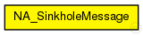

This documentation is released under the Creative Commons license
This documentation is released under the Creative Commons licenseMessage interchanged between sinkhole attack controller and the corresponding hacked modules. In this case NA_AODVUU
See also: NA_SinkholeAttack, NA_AODVUU
Author: Gabriel Maciá Fernández, gmacia@ugr.es
Date: 01/22/2013
The following diagram shows usage relationships between types. Unresolved types are missing from the diagram.

The following diagram shows inheritance relationships for this type. Unresolved types are missing from the diagram.
| Name | Type | Description |
|---|---|---|
| sinkOnlyWhenRouteInTable | bool |
TRUE indicates that only RREQ for routes that are in routing table are answered as the best route across the sink node. A false value indicates that all the sinkhole node will answer to all the RREQ with fake routes. |
| sinkholeAttackProbability | double |
Probability for announcing a fake route when a RREQ is received. Value in [0,1] |
| seqnoAdded | ParPtr |
Sequence number. |
| numHops | int |
Number of hops. |
// // Message interchanged between sinkhole attack controller and the corresponding hacked // modules. In this case NA_AODVUU // // @see NA_SinkholeAttack, NA_AODVUU // // @author Gabriel Maciá Fernández, gmacia@ugr.es // @date 01/22/2013 message NA_SinkholeMessage { bool sinkOnlyWhenRouteInTable; // TRUE indicates that only RREQ for routes that are in routing table are answered as the best route across the sink node. // A false value indicates that all the sinkhole node will answer to all the RREQ with fake routes. double sinkholeAttackProbability; //Probability for announcing a fake route when a RREQ is received. Value in [0,1] ParPtr seqnoAdded; // Sequence number. int numHops; // Number of hops. }
This documentation is released under the Creative Commons license